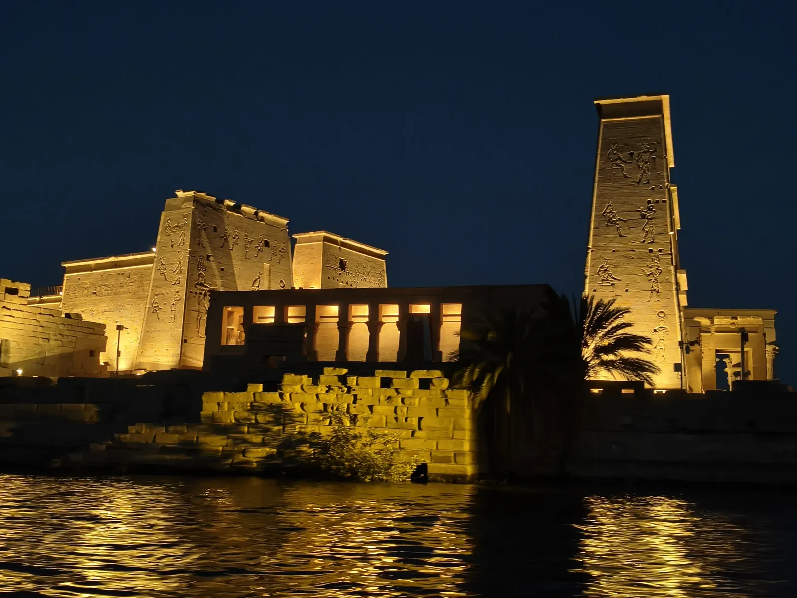

★ Incontournable
Île de Philæ — Temple d'Isis
Le temple d'Isis sur l'île de Philæ est l'un des plus beaux d'Égypte. Déplacé pierre par pierre dans les années 1970 pour le sauver de la montée des eaux du lac Nasser (projet UNESCO), il trône sur une île entourée du Nil. La visite de nuit (spectacle son et lumière) est magique : le temple illuminé sur l'eau, les hiéroglyphes qui prennent vie sous les projecteurs. Comptez 1 000 LE / personne pour le spectacle.